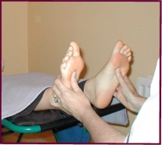
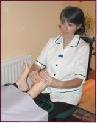

|
|
REFLEXOLOGY AND M.E.
REFLEXOLOGY provides deep relaxation and helps the body regain
balance. Although it does not claim to cure, the gentle
stimulation of the reflexes in the feet does help restore
energy and promote circulation, creating the right conditions
for a return to health.
For more information, click here.
|
|

|

|
|
Reflexology
|
Reflexology is specialised foot massage treating the whole
person by using the feet (or the hands) as "maps" to all the
organs and systems of the body. There are points or zones on
the feet (and hands) that correspond to the organs and systems
of the body. By pressing on one of these points on the feet or
hands, the corresponding organ in the body is affected.
Everything in each zone is connected, so pressure on the big
toe will affect the body right up to the head.
Every part of a zone is linked by energy. If the energy in
one part is blocked, this will mean that the whole zone may
also be blocked, which can lead to illness.
By having a Reflexology treatment these energy channels are
unblocked, toxins are removed from the body and homeostasis (a
balanced state in the body) can be restored.
|
|
Reflexology works by stimulating the various organs and
systems of the body, which are mirrored on the feet. Your body
will be given a complete workout while you relax in a
comfortable recliner. Sensitivity in a particular area of the
foot will indicate an energy blockage in the corresponding
area of the body. Reflexology treatments will help to clear
the blockage.
Reflexology is suitable for home and office treatments
too. |
 | ... back to top of page
|
HOW WILL I FEEL AFTER A REFLEXOLOGY
TREATMENT? |
|
It is common to feel a little tired for up to a day or so
after your treatment. This is because your body may be ridding
itself of toxins. After these toxins are released, through
drinking lots of water (not carbonated), you will have a sense
of renewed vitality.
Some people feel instantly energised after a treatment. It
all depends on the level of toxins in your body. You may
notice a difference in your urine colour (darker) or bowel
movements (more frequent) for a day or two while toxins are
being eliminated from your body. This is perfectly normal. It
means the treatment is working effectively to rid you of
toxins and help restore balance and energy in your
system.
|
|
IS REFLEXOLOGY RECOGNISED BY THE MEDICAL
PROFESSION? |
|
 |
Reflexology is used in both the Coombe Hospital and the
National Maternity Hospital in Holles Street, Dublin. It is
also currently being used in trials with Hepatitis C sufferers
in Dublin.
In Denmark, office trials demonstrated that absenteeism
greatly decreased after regular Reflexology treatments were
offered to employees.
|
|
|
| ... back to top of page
|
WHAT ARE THE BENEFITS OF
REFLEXOLOGY? |
|
There are 7,000 nerve endings in the feet, which are
stimulated during a Reflexology treatment. When an area of the
foot is sensitive or sore to the touch, it indicates an energy
blockage in the part of the body it refers to. Reflexoloxy
will release that energy blockage, thus helping the body to
heal itself. It may take several treatments to achieve this
result.
It has been found that Reflexology:
|
|
|
Relieves stress and tension and has a deeply relaxing
effect on the mind and body. 75% of disease is estimated to be
stress related. |
|
|
Oxygen and nutrients are circulated in the blood thus
providing the body with much needed energy, through improved
circulation. |
|
|
It helps release trapped nervous energy due to the 7,000
nerve endings in the feet being stimulated. |
|
|
It improves waste removal and elimination. |
|
|
It activates the body's self-healing. |
|
|
It boosts the immune system. |
|
|
| ... back to top of page
|
HOW MANY TREATMENTS ARE
RECOMMENDED? |
|
One treatment can be a great pick-me-up. However, a course
of treatments can be very beneficial in treating specific
ailments. We can discuss your needs further after your first
treatment.
|
|
|
|
|
CONTRAINDICATIONS? |
|
If you are attending your doctor for any condition his/her
consent is needed before you can receive Reflexology. We can
write seeking consent on your behalf if you wish.
If you are on medication, the doctor must give consent
also. Reflexology is contraindicated:
Immediately prior to surgery.Directly after
surgery.Pregnancy - in the first 12-14 weeks.When a
contagious/acute infection is present.If you are suffering
from thrombosis or phlebitis.When under the influence of
drugs or alcohol.During menstruation if it is normally
heavy.Where there is internal bleeding.
When Gangrene of the
legs/feet is present.Where AIDS is present except in the
terminal stages.Where Epilepsy is present.Where the client is suffering from mental
instability.On recently fractured, sprained or strained
feet/ankles.
N.B. Diabetics need a referral letter from the doctor before Reflexology can
be performed.
If in any doubt as to whether the treatment should take
place, we will write to your doctor (if you wish) for
permission to treat.
|
|
If you have any further queries on Reflexology you
can contact
us with your
questions. | ... back to top of page
|
|